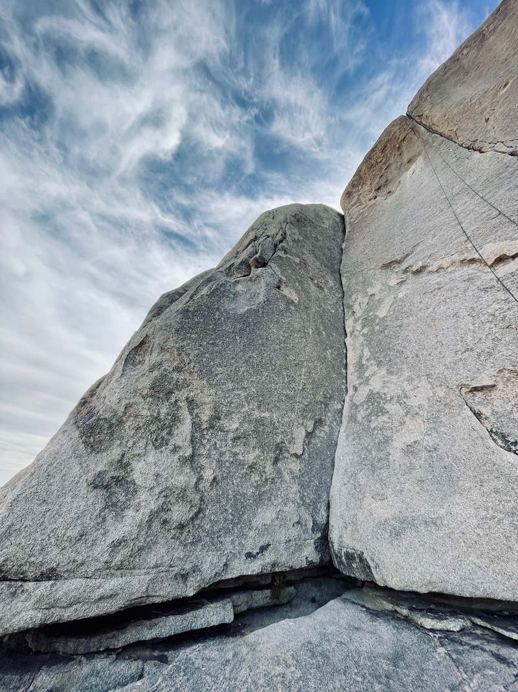
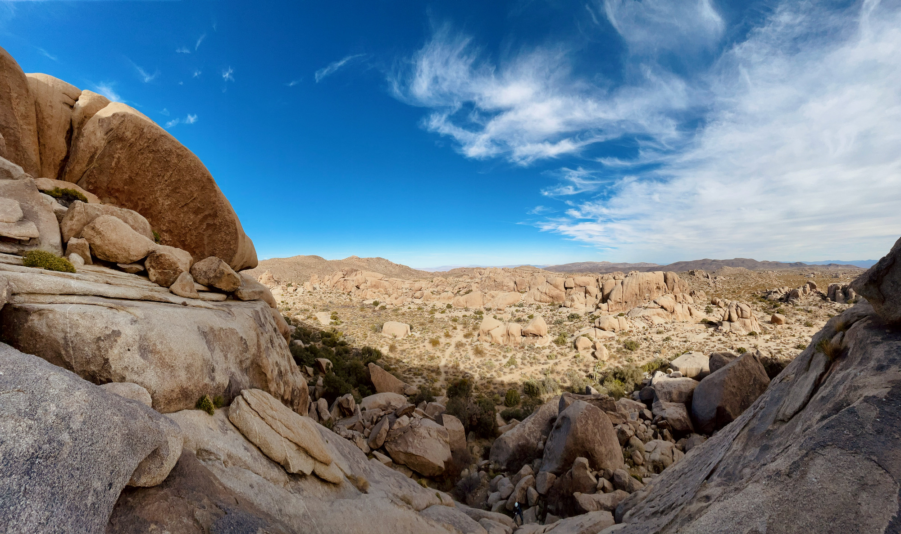

TL;DR: Stop reading this page if you (or anyone related to you) intend on suing me if you die, get hurt, and/or horribly lost on a 20 hr day epic.
Longer disclaimer: Climbing is dangerous. Do your own independent research before attempting any route. Notes here are for my own use and not intended to be definitive or "safe" beta of any sort.
Some additional things about this page:
Commentary: Probably the best moderate off-width (is that phrase even legal?) in Joshua Tree. Easy climbing from the start to a short but will seem like forever off-width section you're either too big or too small for. I'll definitely be back for that clean send.
 View of Dolphin from the base of the climb.
 View from Isle in the Sky and the rappel descent.